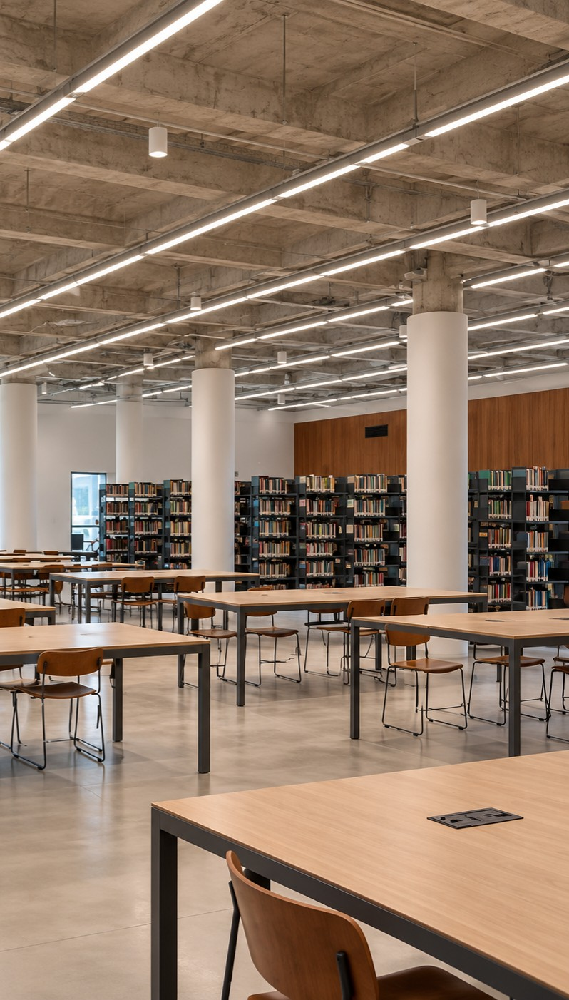

Foto: Fábio Caffe (SGCOM/UFRJ)
Serviços

Pesquisa
Antes de procurar na estante, procure no catálogo
Você sabe como encontrar um livro da Biblioteca Integrada?
- Acesse a Base MinervaO catálogo online das bibliotecas da UFRJ.
- Digite o que você procuraTítulo, autor, assunto ou palavra-chave.
- Confira o registroBiblioteca onde está, localização e situação do exemplar.
- Vá até a estanteEncontre seu livro e, com cadastro ativo, leve para casa.
FAQ: perguntas frequentes
Qual o horário de funcionamento?
De segunda a sexta-feira, das 8h às 17h.
Como faço meu cadastro na biblioteca?
Diretamente no balcão de atendimento, com documento oficial com foto e um comprovante de vínculo com a UFRJ. Para agilizar, faça antes o pré-cadastro online: o cadastro é efetivado em até dois dias úteis.
Como sei se a biblioteca tem o livro que procuro?
Pesquise na Base Minerva, o catálogo das bibliotecas da UFRJ. No registro você confere a biblioteca, a localização e a situação do exemplar. Veja as dicas de pesquisa.
Quantos livros posso pegar e por quanto tempo?
informar quantidade e prazo por tipo de usuário
Como renovo meu empréstimo?
A renovação é feita na Base Minerva, com o seu login. Veja o passo a passo no nosso Instagram.
Posso devolver aqui livros de outras bibliotecas da UFRJ?
confirmar a regra
Como agendo uma visita guiada?
As visitas acontecem às terças e quintas, das 10h às 11h e das 14h às 15h. O pedido é feito pelo formulário online.
Posso usar as salas de estudo em grupo?
Sim. As salas recebem grupos de 3 a 6 pessoas, sem agendamento prévio, por um período inicial de 3 horas, prorrogável conforme a disponibilidade. É preciso ter inscrição ativa no Sistema de Bibliotecas da UFRJ.
Quem pode pedir a Oficina ABNT?
Professores da EBA, da FAU e do IPPUR, para as suas turmas, com pelo menos 48 horas de antecedência. Ver horários.
Como solicito um nada consta?
Pelo e-mail bicirculacao@email.cla.ufrj.br. confirmar dados necessários
Como faço para doar livros para a biblioteca?
informar a política de doações
Como falo com a biblioteca?
Pelo e-mail bicirculacao@email.cla.ufrj.br, pelo nosso Instagram ou no balcão de atendimento.